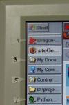

Switching to tasks, icons and windows inside a task
A few (a bit old) video's demonstrate task switching and translating this grammar into another language:
Terminology- With task an application on the taskbar is meant.
- With an icon a little image in the system tray is meant.
- With a window inside a task the different documents inside Word, Excel or a programming IDE are meant, or (new in Windows 7) a subwindow that pops up when a stacked taskbar is opened.
Tasks numbering in Windows 7 offers new possibilities
In Windows 7 tasks (applications) can be fixed on the taskbar, and multiple windows of the same task appear as stacked windows. This enhances the way you can call tasks tremendously.
When the tasks positions on the taskbar are known (see below), so the grammars knows about the task positions, then the application numbers of fixed programs are always the same, and they can be called by number or name.
Task switching by name- You can also define application names, to call with the task command, see below and
configuration.
- Within a session you can give a window (possibly one of many inside a stacked application) a name, and return to this window by saying task <name;>.
Task switching by number
This can be implemented in two ways: - By giving the positions of the first task on the taskbar and one of the others. These positions are remembered until you change the placing of your taskbar.
- By connecting to
Show Numbers Plus!, which always displays the taskbar numbers. See there for more details, in the rest of this page the first method is assumed.
defining the correct taskbar positions |
|---|
Before you can use the commands below, the correct mouse positions must be collected, once.
I would suggest putting the taskbar on the left or right side of your screen and number (some of) the tasks, by a piece of paper which you attach to your monitor.
But horizontal positioning works also, especially with stacked taskbars (Windows 7) |
 |
Getting the proper mouse positions- Position the mouse on the first task, and say the command get task position one.
- Position the mouse on one of the other tasks (eg 5) and say get task position n (in this case five). The difference between the mouse positions of each task is now calculated.
- For the icon commands and for getting the taskbar menu you need the position of the computer clock in the system tray: position the mouse there and say task position clock
These data are put in the file actions.ini. Through the
unimacro shorthand commands
TASK and TOCLOCK the appropriate actions of commands below can be performed. |
Switching tasks and doing task actions
command |
comment |
|---|
| task {number} |
switch to the numbered task on the task bar |
| task {application} |
switch to a named application, through the
BRINGUP action. |
| task back |
switch to the previous task (just { alt+tab }) |
| task give name <dgndictation> |
give the application in front the name you dictate. This can also be done in combination with all the other task specifications, like task 3 first window give name abacadabra. |
| task {dictated name} |
The name you defined can be used the same way as all the other task commands, except for stacked windows |
| window <1-20> | <firstlast> window |
- if in a stacked taskbar window, select the desired window (see below for more examples)
- if in an application, select the sub-window, if implemented.
|
| task <specification> {taskaction} |
go to the task, and perform an additional action, like close | maximise | minimise | other display | tile |
| task {taskaction} |
perform the task action on the active window. So task close is identical to the built-in command close window.
- special actions for stacked windows: close all | close multiple, can also be turned around (in other languages this may be easier to speak): all close | multiple close. With multiple, you can also define as others, all windows except the first in a stack are closed.
- For task positioning and resizing, see below
|
Task positioning commands
command |
comment |
|---|
| task (move|stretch|shrink|position) ({direction}|{angle}) [further specification] |
Move or resize the window in one of the directions or a specified angle. How much is given (optional) in [further specification]. |
Stacked tasks (Windows 7)
command |
comment |
|---|
| task one window {number} |
switch to sub window of task one |
| task one {firstlast} window |
alternative rule, firstlast below |
| task one first window {taskaction} |
all these task commands can be followed with an action, for example close |
| task one close all |
As special action you can include close all, with a nearly hard coded action (relying on the mouse pointer still being on the task icon of the taskbar) |
Notes on {application}:
More details on
BRINGUP details
page.
Notes on {taskaction}:- show or edit with show tasks and edit tasks.
- task other display now uses the Unimacro Shorthand Command TASKOD. See also
page on monitorfunctions
, and
inifile strategy
.
- task tile (or task n tile) operates the taskbar shortcut menu. The actions are a bit complicated: RW remembers the active window, TOCLOCK right opens the shortcut menu on the windows clock, h chooses horizontal tiling, and RTW activates the window it came from.
Notes on {firstlast}
This list can have entries like (show or edit with show tasks and edit tasks):
- first=1
- second=2
- last=-1
- before last=-2
Notes on {direction} and {angle}:- show or edit with show tasks and edit tasks.
- default directions: left|up|right|down| leftbottom|lefttop|rightbottom|rightdown| righttop|leftdown|leftbottom
- possible angles: (0|10| ... |360) degrees
Notes on (optional) [further specification]:- show or edit with show tasks and edit tasks.
- pixels: (1, ... , 200) [pixels*] (word *pixels is optional again)
- relative: (10|20| ... |100) percent
- centimeters, millimeters, inches: (1, 2, ... , 20) (centimeters|millimeters|inches)
- pixels per inch given in .ini file (_tasks.ini), in section [general], key screen dots per inch (default 90)
Positioning the mouse after a task action
With the variable center mouse (in section general of the tasks inifile, say edit tasks to control this variable) you can enable or disable this feature. It is demonstrated in the demo movie.
- With centre mouse = T (or 1) the mouse is positioned 30% from the top left position of the active window.
- With centre mouse = F (or 0) this positioning is not done.
Reaching icons
Note: the clock position has to be recorded first, see above
command |
comment |
|---|
| icon {number} |
switch to the icon by number |
icon (left|right|up|down) [n]; |
move relative inside the system tray (left and up are identical, and right and down are identical)
Sometimes this commands seems not to work, although the focus is on an icon. |
| (icon|icon n|icon direction| icon direction n) {iconaction} |
perform an action on the current icon, or the icon you switch to.
See the icon actions with show tasks or edit them by saying edit tasks. |
Managing the Start menu
command |
comment |
|---|
| start menu |
just open the Windows start menu |
| start menu {startmenucommands} |
use additional commands, which you can specify in your _tasks.ini configuration file (nearly obsolete in Windows 8) |
|